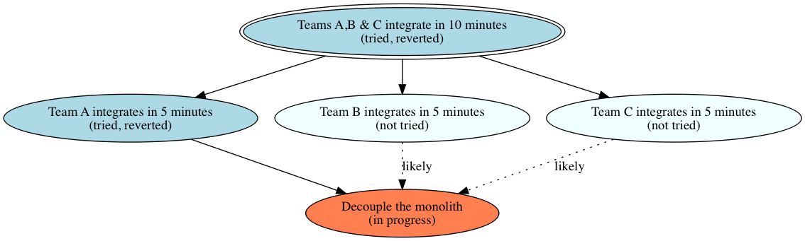

In the previous post, I presented both large scale code and organization changes. I highlighted how they face similar difficulties of huge Work In Progress. Let’s see how programmers deal with these problems.
The mikado method algorithm
The mikado method is a programming technique to perform large code refactoring one step at a time. It fixes the problematic situation we raised at the beginning of these posts. It enables developers to integrate their work with their teammates’ continuously. It allows to build features and do the refactoring in parallel. Developers can also pause a mikado refactoring for a while if needed. On top of all this, it makes it easier for the full team to collaborate on the same refactoring.
💡 Developers can pause a Mikado Method refactoring for a while if needed.
Here is how it goes, but you can get a more detailed (and technical) description here.
- Try to do the change you want
- If it the tests pass, great, you’re done
- Otherwise, add a node for the change you wanted to do in your mikado graph
- Write down the errors you faced
- Revert your change
- Recurse from 1 for every error
- Draw a dependency arrow from the nodes of errors to the node of your initial change
The catch is that developers should revert the work they could not finish to move on !
How to apply it to an organization change
In some way, the Mikado Method is very similar to the improvement kata. The flow of the Improvement kata goes on like that :
- Determine a target condition
- Try to work with the target condition in place
- If it works, you’re done
- Otherwise, understand the main impediment, and revert to the old way of doing things
- Work to remove the impediment
- Start again from step 2
Have a look at these blog posts for a more practical presentation of the improvement kata.
💡 The Mikado Method and the Improvement Kata are more than similar.
Granted, the Mikado method and the improvement kata look similar. They are in fact more than similar. The improvement kata does not prescribe how you should fix your impediments. What’s not explicit is that we can use it recursively to fix impediments ! That makes it almost identical to the Mikado Method, but for organization instead of code. It won’t be a surprise to know that some companies have used the improvement kata for that. For example, HP used it to drive its Laser Jet team transformation. Others have already used the Mikado Method for organization transformation.
Suppose your organization wants to move to full Continuous Integration(TODO). It could start by trying to integrate all their devs in 10 minutes on a small group of teams. If it works, fine, other large teams can try it as well. Let’s see what to do if it fails though. Thanks to a retrospective teams understand that they need to master CI themselves first. In this case, they could revert large scale CI, and have one of the teams try to do continuous integration. If it works, fine, another team can try it too. If it does not, they’ll do a post-mortem of some sort to understand the root issue, and work on it. For example, here the main impediment could be a coupled architecture. The fun thing would be to apply the Mikado Method to do this refactoring 😉.
As with the Mikado Method, it is possible to draw an organization change Mikado graph along the way :

The graph is a living artifact. As we try and revert new experiments, we should expand and collapse the graph. This creates a global and shared view of the state of the change. Needless to say that this is great for collaboration.
To be continued (again)
This was part 2 of a series on applying the Mikado Method to organization changes. I’ll end this series up with next post, where I’ll go through the pros and cons of the approach.